حوّل صورة القطعة إلى صورة على عارض افتراضي، أو بمانيكان غير مرئي، أو مفرودة على خلفية نظيفة، أو بعد كوي رقمي للتجاعيد. القطعة تبقى بقصّتها وألوانها ونقوشها.
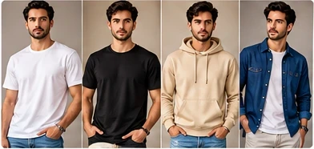
صور توضيحية لأنواع النتائج التي تستهدفها الأداة.
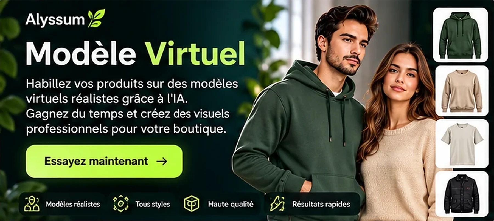
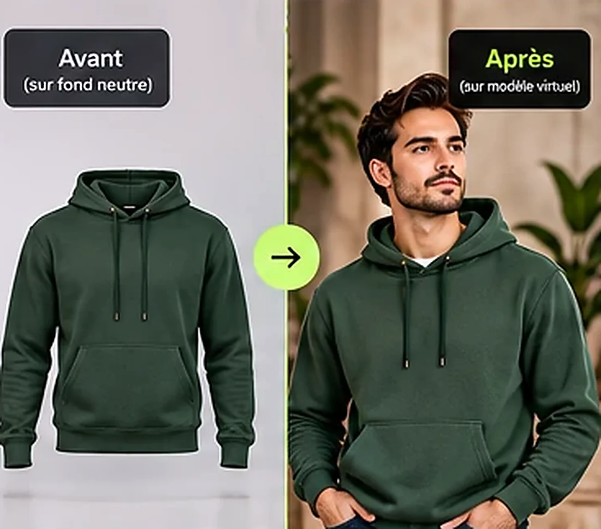
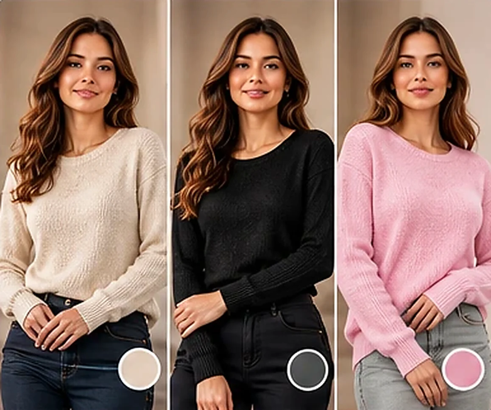
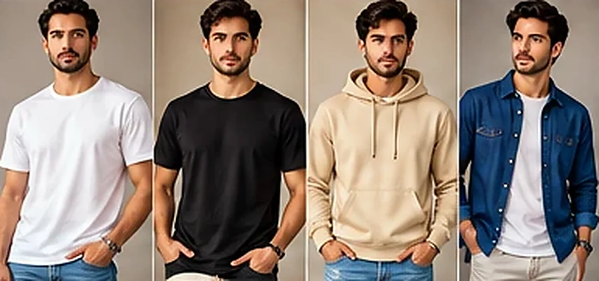
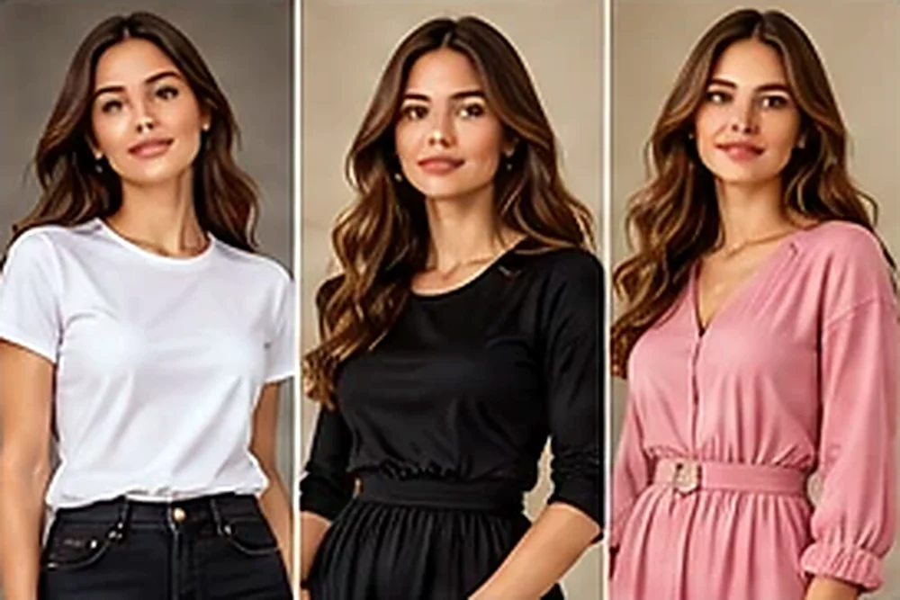
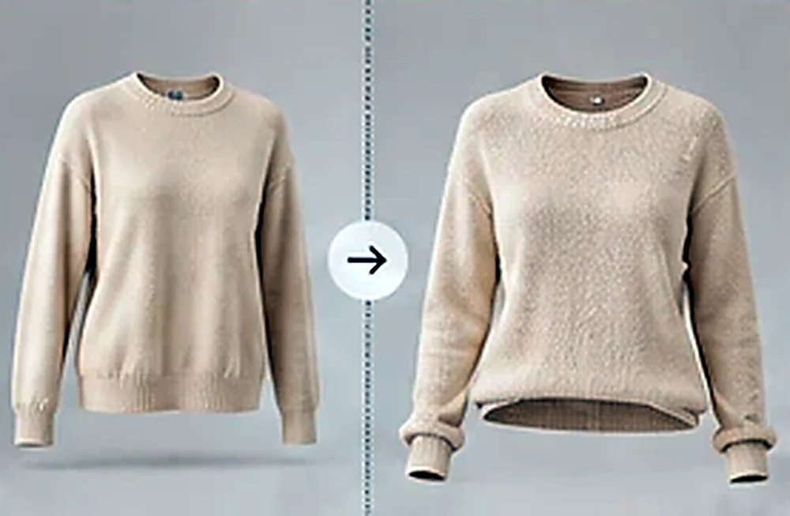
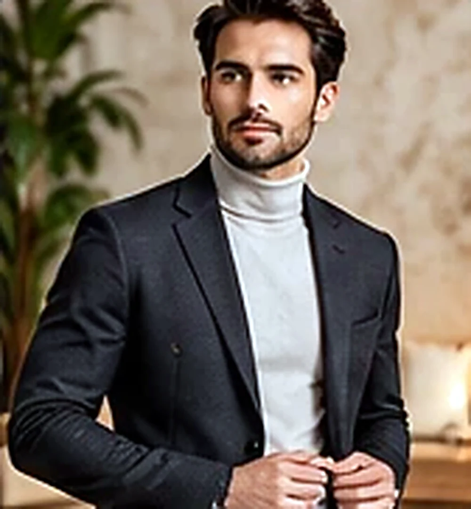
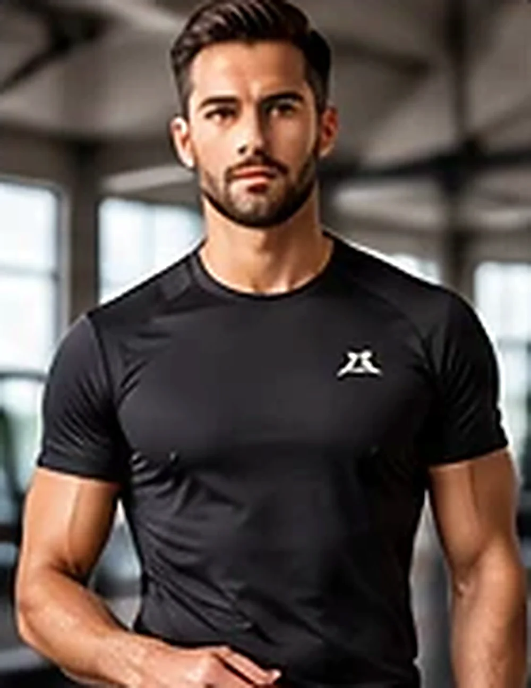
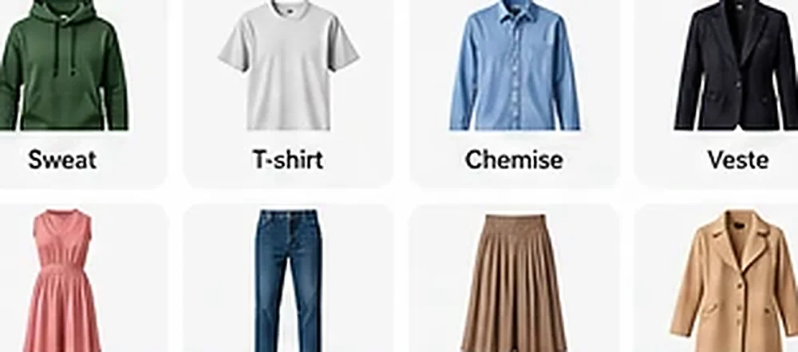
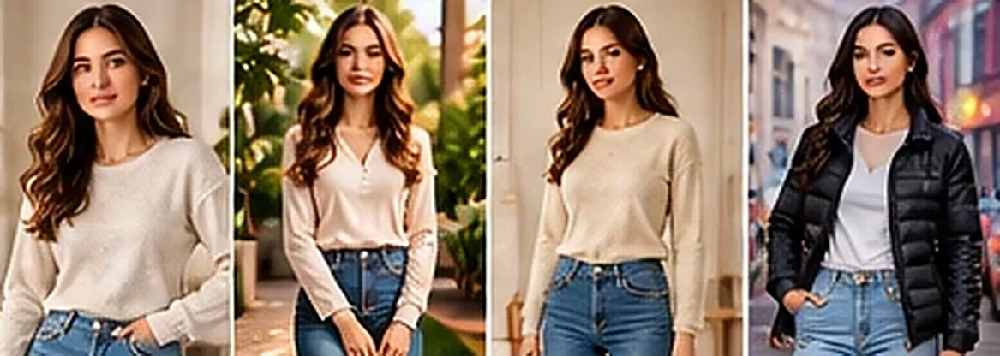
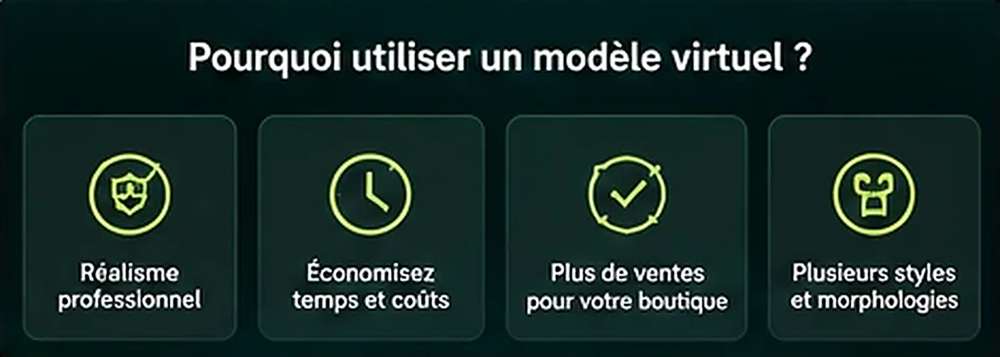
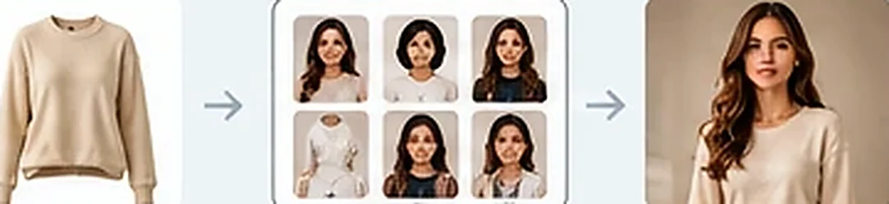
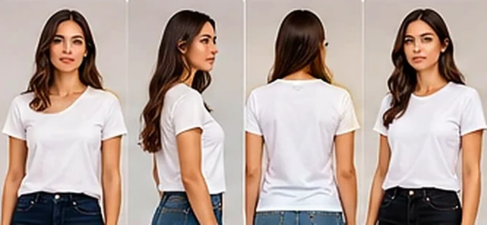
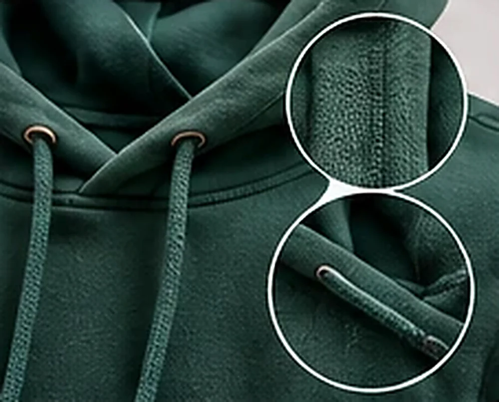
الافتراضي مانيكان بلا وجه، ويمكنك اختيار عارض رجل أو امرأة محجبة بلباس محتشم، مع الوضعية والخلفية والمقاس.
من الصورة إلى النتيجة في دقائق.
من صور صفحتك أو مكتبتك في المحرّر.
عارض افتراضي أو مانيكان أو مسطح أو إزالة تجاعيد.
تظهر النتيجة مكان الصورة، فتؤكدها أو تلغيها.
الوضع والعارض والوضعية والخلفية والمقاس.
تحتاج مفتاح Alyssum API (تُحسب التكلفة وتُطلب موافقتك قبل كل تنفيذ)
إجابات سريعة عن أكثر ما يُسأل.
تُرسل صورة القطعة مرجعاً مع تعليمات صريحة بالحفاظ على القصّة والألوان والنقوش، وتتفاوت الدقة بحسب الصورة، فراجع الناتج دائماً قبل الاعتماد.
تحتاج مفتاح Alyssum API، وتظهر التكلفة وتوافق عليها قبل كل تنفيذ.
الافتراضي مانيكان بلا وجه، وعند اختيار امرأة تُعرض بخمار ولباس محتشم.
للتجربة على صورة شخص توجد أداة «تجربة افتراضية» مستقلة في المحرّر.